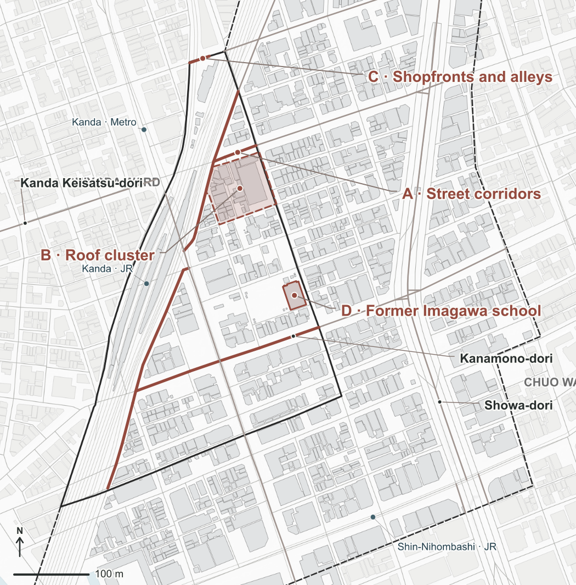
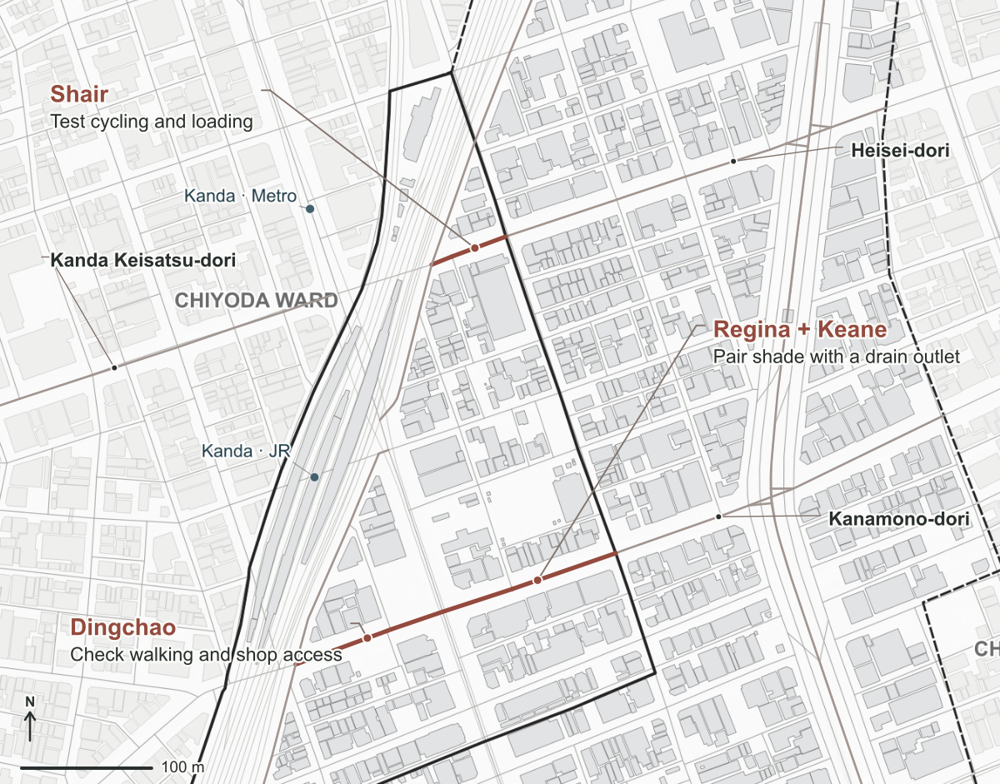
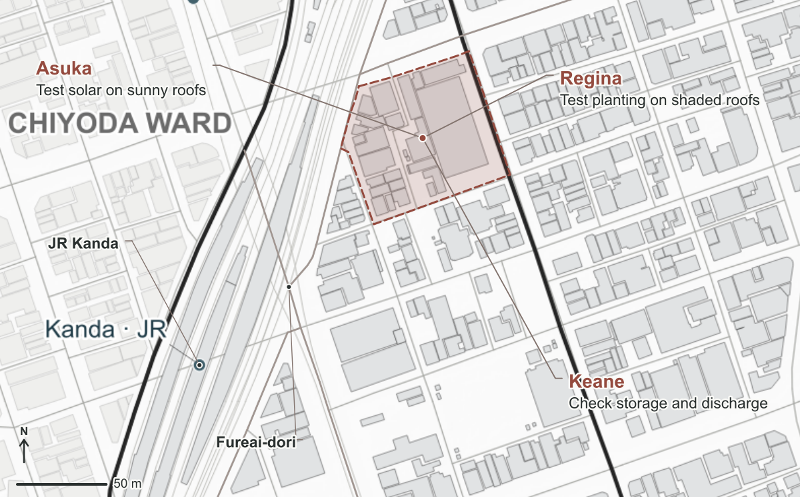
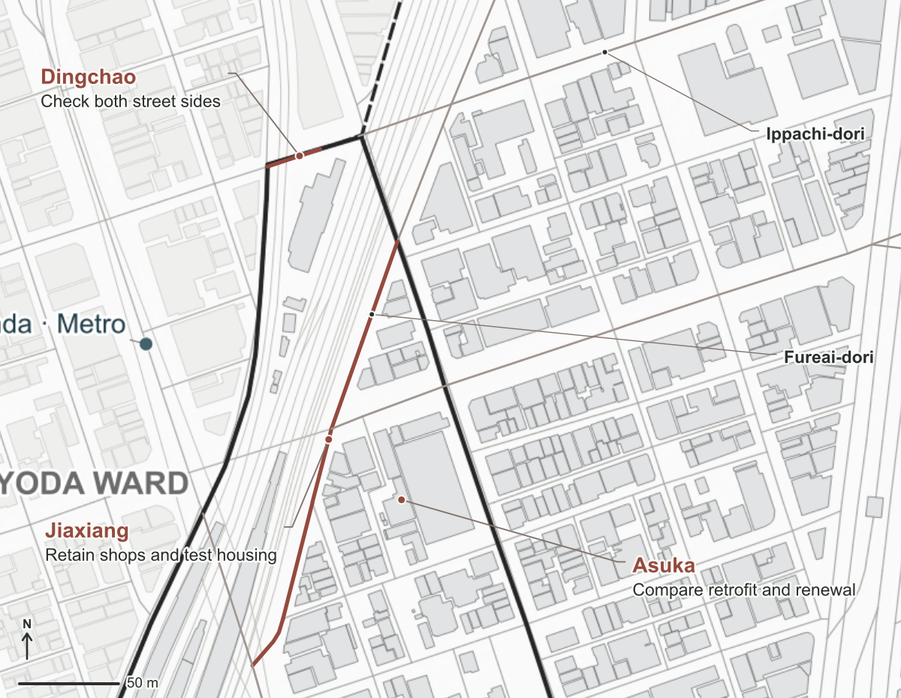
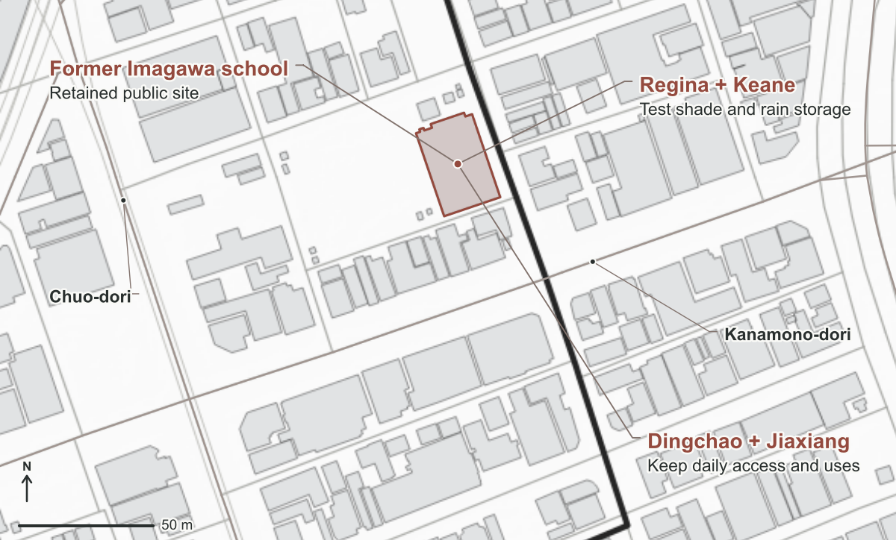

Future Vision
Kajicho 2050
Prepare one plan for Kajicho 1 & 2 within the Primary Boundary.
Kajicho in 3D
Planning framework
Carry Kajicho forward by lowering operating carbon, adapting to heat and flooding, and supporting local businesses and public life.
Decarbonization
-
Building energy and renewal
Asuka Tanzawa
Retrofit, selectively rebuild and share rooftop solar.
-
Land use and local economy
Jiaxiang Zhao
Identify uses to keep and space for housing and work.
Climate resilience
-
Heat and green space
Regina Aura Delazenitha
Place shade where people walk and gather.
-
Flooding and drainage
Keane Carlo G. Lomibao
Route runoff to connected planting and storage.
Urban vitality
-
Street design and access
Shair Muhammad
Reallocate street space and test access, traffic and deliveries.
-
Walking and public life
Dingchao Shi
Find accessible streets with weak walking conditions or few places to stay.
- PlaceBring studies together at four sites
- DecisionCheck policy, rights and approvals
- PhasesPhase the work from 2030 to 2050
The outcomes and studies come from the interim slides. The targets and sites are proposed for studio testing. [1]
Where the proposals meet
At four sites, the studies share street width, roof area or public land. Compare the options at each site alongside its map.


-
AHeisei-dori and Kanamono-dori
Climate resilience · Urban vitality
-
BRoof cluster east of JR Kanda
Decarbonization · Climate resilience
-
CFureai-dori and Ippachi-dori frontages
Decarbonization · Urban vitality
-
DFormer Imagawa school and surrounding streets
Climate resilience · Urban vitality
Case A
Heisei-dori and Kanamono-dori
Shair, Dingchao, Regina and Keane


Loading and rain gardens compete for the curb
Who needs to agree
- Road manager & police
- Shops & delivery operators
- Residents & street users
What to test
Survey width and turning space. Compare peak queues, clear walking width, shade and sewer overflow. The interim layout tests 3 general lanes on both streets. Street design · Drainage model
Open Heisei-dori in 3D Case A notesCase B
Roof cluster east of JR Kanda
Asuka, Regina and Keane


Solar panels, planting and storage share roof space
Who needs to agree
- Owners & building managers
What to test
Compare yearly electricity and runoff under the same assumptions. Test against 90% of the feasible solar-only yield. Solar target · Renewal study
Compare roof options Case B notesCase C
Fureai-dori and Ippachi-dori frontages
Jiaxiang, Asuka and Dingchao


New space can interrupt shops and alley access
Who needs to agree
- Owners & building managers
- Shops & delivery operators
- Tenants
- Residents & street users
What to test
Survey both street sides at different times. Compare retained shops, housing capacity, carbon and alley access. Use inventory · Frontage study
View building uses in 3D Case C notesCase D
Former Imagawa school and surrounding streets
Jiaxiang, Regina, Keane and Dingchao


Rain storage must leave a dry route into the site
Who needs to agree
- Chiyoda City
- Residents & street users
- Site operators
What to test
Observe access, shade and use before and during a reversible trial. Rerun the drainage model for the chosen layout and outlet. Public land policy · Local pilot
View the former school in 3D Case D notesCase notes
A Street corridors
An illustrative 17 m section has 18.5 m of proposed uses. Moving loading to an approved bay reduces the need to 16.5 m. Keeping loading and moving rain storage uses the full 17 m. In the interim design, Heisei-dori goes from four general lanes to three, and Kanamono-dori keeps three.
Keane’s two-sided rain garden scenario leaves about 378 m³ of overflow, some 30 m³ above the 2050 target. Compare options at the same inlets and outlets. Overflow target · Interim street map

- Road manager & police
- Confirm trial approvals, traffic circulation and emergency access.
- Shops & delivery operators
- Check delivery times, turning space and the route from the bay to shops.
- Residents & street users
- Walk the clear route and check crossings.
B Solar and green roofs
An illustrative roof has 1,000 m² free and three uses requesting 1,100 m². If the 150 m² storage moves, 950 m² remain in use, including all 700 m² of panels. Keeping all uses on the roof leaves 600 m² for panels. Test whether that still reaches 90% of feasible solar-only yield. Count any shared planting and storage area once. Interim building stock map

- Owners & building managers
- Confirm roof rights, safe access and who shares electricity, costs and upkeep.
C Shopfronts and alleys
In the 2040 example, 5% of 200,000 m² permits 10,000 m² of demolition. Adding a 1,600 m² rebuild to 9,200 m² already allocated exceeds the cap by 800 m². Retrofit or rephase enough work to stay within the cap. On the Fureai-dori study segment, shops face a parking edge, so assess each side’s needs separately. Interim walking screen

- Owners & building managers
- Review leases and the timing of work.
- Shops & delivery operators
- Check shop continuity, construction access and workable premises.
- Tenants
- Discuss temporary and return premises and access during work.
- Residents & street users
- Check alley and entrance access during construction.
D Former Imagawa school
Start with a reversible seating and shade trial if Chiyoda agrees. Observe the route and space before and during the trial. Locate permanent storage after checking public facility needs, the site boundary and the drainage connection. Interim public assets map

- Chiyoda City
- Confirm the land boundary, compatible uses and opening hours.
- Residents & street users
- Test the dry route, seating and hours of use.
- Site operators
- Identify who will run and maintain a trial.
Policy and who decides
Before choosing a design, check which plans apply, who is affected and who can carry out the work.
Plans and local evidence
- Kanda Station walking route
- Heisei-dori to Kanda Keisatsu-dori. Izumibashi plan, p. 180
- Shops and seating
- Fureai-dori shops and an East Exit parking-bay seating trial. Field Visit · Trial report · Walkable design
- Public land and building renewal
- Chiyoda retains the former Imagawa school site for public facilities. Public land policy · Building rules
People and responsibilities
How renewal works · Local developers and projects
- Land and building rights
- Landowners, land leaseholders and building owners. Field Visit rights map
- Daily access and use
- Residents, tenants, businesses and people on the street.
- Local groups and public managers
- Neighborhood association, East Exit redevelopment preparatory association and the managers of roads, sewers and public sites. Field Visit organizations
How the studio tests proposals
-
Check what applies
Check plans, site capacity, rights and protected uses. Keep essential access.
Studio test limits -
Test the options
Use the same reference to compare retrofit-first and selective renewal. Show who gains or loses.
-
Confirm responsibilities
Check approvals, terms with affected users, funding and who will run and maintain the work.
-
Requirements still open
Revise and retest
Change the design, location or timing.
-
Requirements met for this phase
Set the phase
Record who acts, funds and maintains the work.
Studio test limits and comparison rules
- Demolition
- Cap cumulative demolition at 0% by 2030, 5% by 2040 and 10% by 2050. Use existing gross floor area in Kajicho 1 & 2. Count each removed building once.
- Drainage and access
- Keep modeled sewer overflow at zero under 85 mm/h and hold downstream peak discharge to the reference level or below. Keep emergency and essential access.
- Comparison and funding
- Include independently confirmed work in the reference. Report the gains, losses and people affected. Assign a funding source, operator and maintenance budget to each scheduled permanent action.
Target to Test
Twelve proposed targets for 2050. Each shows what we know today and the check to make after a pilot or permanent change.
Decarbonization
Annual operating carbon
−8%annual operating CO₂
- Baseline
- 13,090 tCO₂/yr · 243 buildings (modeled)
- Verify
- Compare annual energy and CO₂ across the same buildings.
Cumulative carbon
≤ referencetotal CO₂e through 2050
- Baseline
- Estimate materials and operating emissions for the reference
- Verify
- Add emissions from construction, demolition and use.
Solar electricity on shared roofs
≥90%of feasible solar-only annual yield
- Baseline
- Survey installed capacity and roof conditions
- Verify
- Compare annual kWh for shared-use and solar-only layouts.
Climate resilience
Local sewer overflow
≤347.65 m³sewer overflow (−15%) at 150 mm/h
- Baseline
- 409 m³ at 150 mm/h (modeled)
- Verify
- Rerun the same storm and check downstream peak flow.
Shade on walkways and places to stay
+5percentage points in shaded area
- Baseline
- Map current shade on selected walkways and public spaces
- Verify
- Compare shade maps at 14:00 on the same summer day.
Outdoor heat stress
−1 °Cmean outdoor heat stress (UTCI)
- Baseline
- Measure pedestrian-level conditions on a hot day
- Verify
- Repeat heat stress checks at matched sites and times.
Social and economic vitality
Priority walking links
≥50%of eligible priority links improved
- Baseline
- 32 priority and 65 retention links across the wider study area
- Verify
- Audit and resurvey the same priority links inside Kajicho 1 & 2.
Time spent in public space
+20%or more time spent in selected spaces
- Baseline
- Count person-minutes per hour before the pilot
- Verify
- Repeat counts of time spent sitting, meeting or using the space.
Housing capacity
+30people in net housing capacity
- Baseline
- Audit existing dwellings. 300 registered residents in Oct 2026
- Verify
- Compare retained, removed and added capacity from plans.
Workspace capacity
≥100%of affected usable workspace kept
- Baseline
- Survey existing usable floor area at project sites
- Verify
- Compare usable m² and small premises by use.
Deliveries and essential access
0unserved destinations and added junction spillbacks
- Baseline
- Heisei-dori 4 lanes and Kanamono-dori 3. Count peak traffic
- Verify
- Walk the routes and test loading and peak queues.
Small businesses and heritage
100%of displaced small shops offered viable space
- Baseline
- Record current shops, protected assets and alley access
- Verify
- Check written offers and verify zero loss of protected assets or links.
Measurement notes and milestones
Annual operating carbon
- Existing baseline
- 13,090 tCO₂ per year for 243 existing buildings in Asuka’s interim model. Its −9.2% scenario assumed 151 rebuilds. [4]
- Proposed target
- −2% by 2030, −5% by 2040, −8% by 2050. A reduction of 8% on the interim baseline is about 1,047 tCO₂ per year.
- How to verify
- Compare each package against its same-year reference. Match the study inventory, uses, occupancy and emission factors. Model energy demand and solar consumed on site. Compare modeled demand with meter data where available. Report total CO₂ and demand per square meter.
Cumulative carbon
- Existing baseline
- The interim assessed operating carbon. Estimate the reference’s materials, construction, demolition, replacements and operation before comparing alternatives.
- Proposed target
- 2050 cumulative emissions at or below the reference in tCO₂e, summed from the same start year for every package.
- How to verify
- Derive quantities from the existing and proposed models. Apply the same material factors, service lives and operational assumptions. Report upfront and annual emissions separately, then add them through 2050.
Solar electricity on shared roofs
- Existing baseline
- The interim’s consolidated-roof example generated about 1.5 times the modeled yield of the existing roof layout. Record current installed capacity and meter data for each chosen cluster. [4]
- Proposed target
- At least 90% of the feasible solar-only layout’s annual yield on roofs that also provide planting or water storage.
- How to verify
- Run both layouts with the same roof access, load limits, shading and weather. Compare kWh per year, installed area and electricity used on site. Check the installed layout and meter data after completion.
Local sewer overflow
- Existing baseline
- The interim sewer model gives 0, 23 and 409 m³ for the 85, 115 and 150 mm/h rain events. The outputs apply to the modeled catchments. [6]
- Proposed target
- At 150 mm/h, ≤388.55 m³ by 2030, ≤368.10 m³ by 2040 and ≤347.65 m³ by 2050. These are 5%, 10% and 15% below the interim reference.
- How to verify
- Rerun the reference and both packages with the same rainfall time series and sewer model. Update the inlet, storage and outlet geometry for each design. Compare overflow volume and downstream peak flow. Check the installed storage and monitor runoff where possible.
Shade on walkways and places to stay
- Existing baseline
- August 2026 satellite maps locate hot surfaces and low vegetation. Calculate the existing shaded share within a fixed set of priority walkways and public spaces. [5]
- Proposed target
- 5 percentage points more shaded area by 2050 at 14:00 on the agreed summer test day.
- How to verify
- Map building and tree shadows using the same date, sun angle and walk-and-stay area. Count shade people can reach. State the assumed canopy size for each phase and check shadows on site after installation.
Outdoor heat stress
- Existing baseline
- Regina mapped surface temperature. Collect a pedestrian-level hot-day baseline at the chosen streets and public sites. [5]
- Proposed target
- At least 1 °C lower mean UTCI at the matched hot-hour test points by 2050. UTCI is a measure of outdoor heat stress.
- How to verify
- Estimate UTCI from air temperature, humidity, wind and radiant temperature at matched points and hours. Compare the same weather and account for model and sensor uncertainty. Repeat observations once the design is in use. [13]
Priority walking links
- Existing baseline
- The interim screen shows 32 priority and 65 retention links across the study area. Field-check the priority links inside Kajicho 1 & 2 and record each link’s original flags. [8]
- Proposed target
- Improve at least half of the eligible priority links within Kajicho 1 & 2 by 2050. Freeze the field-checked list before design.
- How to verify
- Repeat the same street-side survey. Clear every flagged deficiency on each counted link. Reach a walking score of 3 or more, a frontage score of 1 or more on the flagged side, or at least two stay cues, as applicable. Record protected links retained.
Time spent in public space
- Existing baseline
- The interim maps street features that invite people to stay. Record person-minutes per observation hour at each trial site before installing changes. [8]
- Proposed target
- At least 20% more person-minutes per hour by 2050 across the selected nodes. At a site with zero baseline, use 10 person-minutes per hour.
- How to verify
- Repeat observations inside the same boundaries on comparable weekdays, weekends and weather. Total minutes spent sitting, meeting or using each space. Observe a similar unchanged location and record access for residents, workers and visitors.
Housing capacity
- Existing baseline
- Kajicho 1 & 2 recorded 300 registered residents in October 2026. Audit existing dwellings and unit sizes in the buildings affected by the plan. [3]
- Proposed target
- Net capacity for 30 more residents by 2050 in the design. Apply the same occupancy assumptions to both layouts.
- How to verify
- Count retained, lost and added dwellings by size. Convert floor plans to resident capacity with a consistent occupancy rule. Track subsequent occupation and affordability separately.
Workspace capacity
- Existing baseline
- The 2021 Economic Census recorded 13,587 workers in Kajicho 1 & 2. Survey usable workspace area and small business units at the project sites. [3]
- Proposed target
- Retain at least 100% of the baseline usable workspace area across the buildings affected by 2050 works.
- How to verify
- Compare usable square meters and count small premises by type before and after. Report the change in capacity using the same floor area per worker by use. Record occupied space and rent after handover.
Deliveries and essential access
- Existing baseline
- Heisei-dori has four general lanes in the interim drawings and Kanamono-dori has three. Survey turns, peak queues, clear widths and deliveries. Interim traffic results use synthetic inputs. [7]
- Proposed target
- Zero existing destinations left without essential access and zero added junction spillbacks in the tested peaks.
- How to verify
- Test the street section and adjoining junctions with counted movements, signals and delivery schedules. Walk the accessible route and confirm service and emergency access with the road managers. Check diversion on Kanda Keisatsu-dori. [11]
Small businesses and heritage
- Existing baseline
- The interim maps facilities, heritage and alleys. Confirm who occupies each affected space and which access routes and assets are protected. [2] [9]
- Proposed target
- 100% of directly displaced small shops offered viable temporary or return space. No loss of protected assets or interruption of protected alley links.
- How to verify
- Record unit size, rent, move dates and written offers. Verify access and retained assets on the layout and on site. Check what the shops and users can access after completion.
Phases to 2050
Roles and agreements by proposal
Prepare two phased packages for the final review scheduled for . Each action needs an owner, a funding path and a date to measure its effect.
-
Survey and pilot
Freeze the existing GIS baseline. Survey street widths, roof capacity, sewer connections, public use and active tenancies. Work with local operators to try seating, shade and loading changes that can be undone.
Gate. No studio-led demolition. Agree who can authorize and maintain each pilot. Collect the before-and-after evidence.
-
Connect and retrofit
Extend successful street pilots. Link rain gardens to verified drainage, retrofit approved roof clusters and improve walking links around public sites.
Gate. Cumulative demolition stays within 5%. Road and sewer managers verify access and discharge. Building owners and operators commit to upkeep.
-
Renew selectively and review
Proceed with selective renewal where the comparison shows district benefits. Coordinate works with owners, tenants and public agencies. Review measured performance and adjust operating arrangements.
Gate. Cumulative demolition stays within 10%. Secure tenant transitions and maintenance funding. Publish each result against its target and identify any remaining gap.
Planning support
Give residents, owners, businesses and city staff a shared map of options and the targets each one affects. Compare current and proposed plans at the same scale. Use a street section or a 3D view where space is contested and attach the before-and-after tests.
Implementation support
Give each action an implementation record for the rights holders, public managers and operator. List the agreements and approvals needed, the phase, who pays, who maintains it and when to check the result. Keep work conditional until those responsibilities are agreed.
Sources and notes
Follow the numbered links to the 18 November interim slides, site maps and public records.
- Studio framework and visionTheme B, interim presentation, 18 November 2026.
- Study extent, maps and historyTeam B GIS and the modern panel from Historical Urban Fabric. FY2023 orthophoto and building footprints from MLIT PLATEAU.
- Land use and social backgroundJiaxiang Zhao, interim presentation and facilities inventory, 25 October 2026.
- Building and energy scenariosAsuka Tanzawa, interim presentation. The carbon and battery results come from modeled scenarios.
- Green space and surface heatRegina Aura Delazenitha, interim presentation. Landsat 8 imagery, August 2026.
- Local sewer model and river hazardKeane Carlo G. Lomibao, interim presentation. The Tokyo flood hazard map provides separate river-basin context.
- Street design and crossingsShair Muhammad, interim presentation. Road counts are from the 2021 national survey.
- Walking experience and public spaceDingchao Shi, interim presentation. The street map screens conditions using sampled imagery, network structure and frontage data.
- Field visit, early reviews and street trialsSite work on 25 October, mapping in late October and the Georgia Tech review on 4 November. Chiyoda City records the Kajicho 2-chome trial.
- Written interim feedbackPublic summaries of comments shared with the studio about the 18 November review.
- Kanda Keisatsu-dori guidanceChiyoda City, adopted area planning policy and related records.
- Former Imagawa school and public landTeam B's public asset map and Chiyoda City's policy for land retained for future facilities.
- District plans, street use and rightsChiyoda City’s Izumibashi master plan connects Heisei-dori and Kanda Keisatsu-dori near Kanda Station, p. 180. The walkable design guides use of public space.
- Proposal mapsStudio QGIS Basemap and study boundary. Roads use project GIS with GSI and OpenStreetMap data. Callouts show studio locations for testing.
- Outdoor heat stressCopernicus Climate Change Service. UTCI uses air temperature, radiation, humidity and wind.
Written feedback from the interim review
Takahiro Yoshida
Show where decarbonization, climate resilience and vitality reinforce one another or compete. Use those findings to develop one integrated proposal.
Megumi Migita
Drawing on Kajicho 2-chome's area-management work, Migita asks who benefits and who controls and maintains each site. Make tree care practical. Test changes to Heisei-dori and Kanamono-dori alongside Chiyoda City's plan for nearby Kanda Keisatsu-dori [11].
Rikutaro Manabe
Let Kajicho's small plots and local businesses guide renewal. Look at the history of alleys, land ownership and community groups. Test how business networks can support shared energy and how alley entrances and shopfronts can support everyday life.